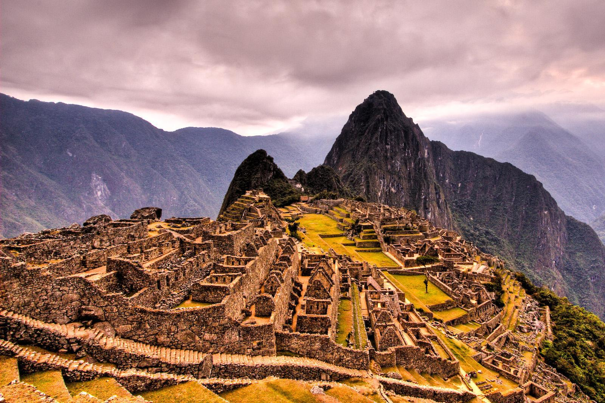
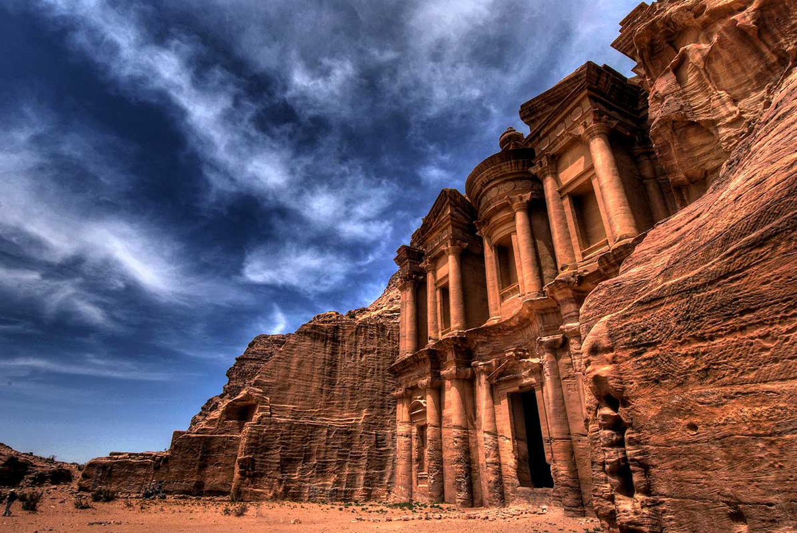
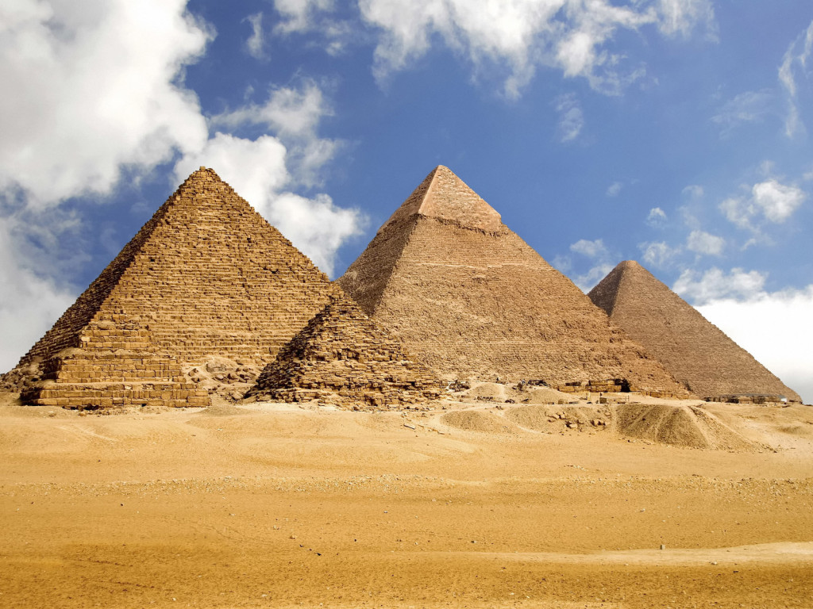
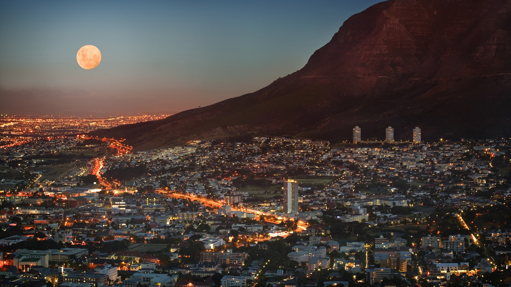
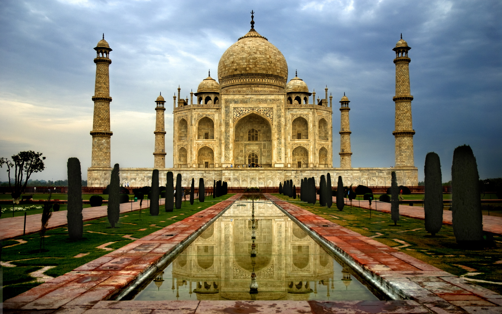
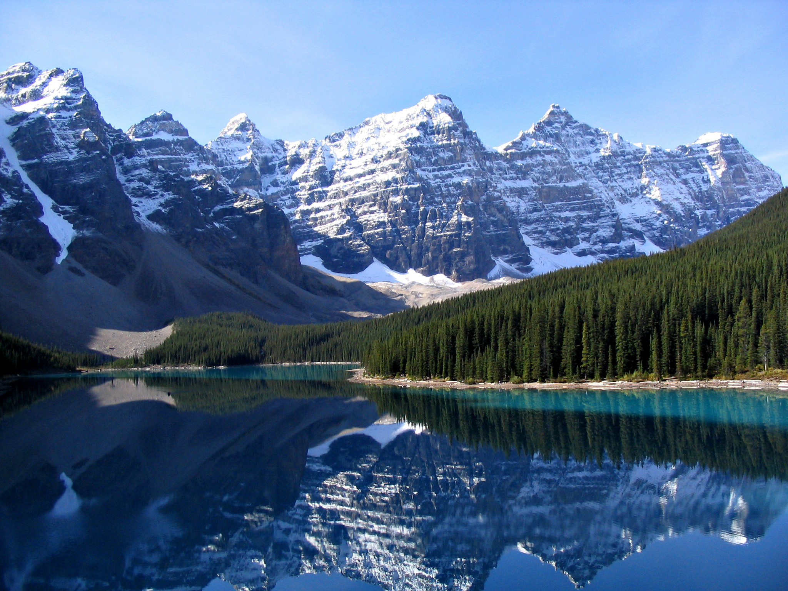
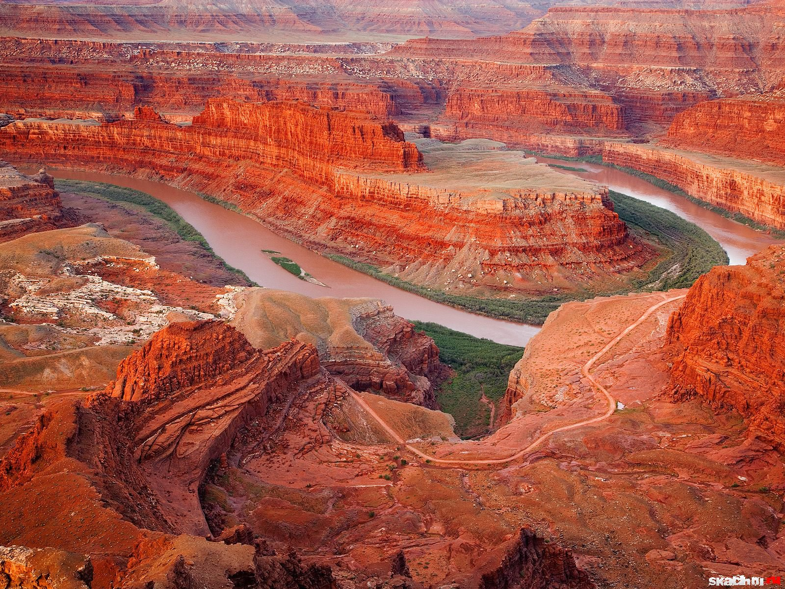
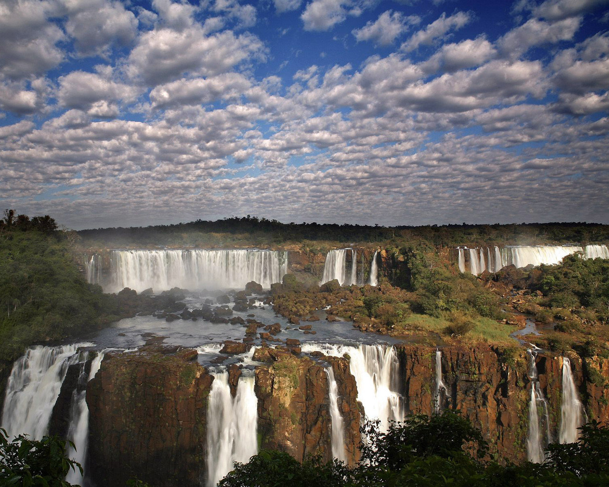

Подорож – це завжди відкриття. Подорожуючи, ми відкриваємо для себе світ, а себе – світові.Тільки відправившись у подорож, ми можемо побачити своїми очима далекі країни та міста, про які так багато чули або читали. Та що там далекі країни… сусіднє місто чи мальовниче село можуть назавжди залишитись для нас тільки назвами, якщо ніколи туди не поїдемо.Подорожуючи, ми зустрічаємо нових людей і дізнаємося про їх спосіб жити і мислити.Подорожуючи разом з друзями, ми відкриваємо нові грані характерів один одного.Подорожуючи, ми пізнаємо себе. Хтось, залишаючи свій рідний дім, повернувшись, скаже, що дома краще. А для когось подорож відкриває шлях до кращих змін. Подорожуючи, ми починаємо дивитись на речі по-новому,більше цінити те, що залишили дома. Подорожуючи, ми залишаємо свою «зону комфорту», а отже змушуємо себе долати маленькі, а часом і великі перешкоди. Подорож – це тренажер для характеру. І нарешті, подорож – це завжди яскраві враження, незабутні моменти життя, веселі спогади і безцінний досвід.
Подорож - єдина річ, купуючи яку, стаєш багатшим (автор невідомий)
Життя під час подорожі - це мрія в чистому вигляді (Агата Крісті)
Тільки про дві речі ми будемо шкодувати на смертному одрі - що мало любили і мало подорожували (Марк Твен)
Людина, яка багато подорожує, схожа на камінь, пронесений водою багато сотень верст: його шорсткості згладжуються, і все в ньому набуває м'яких, заокруглених форм (І. Реклю)
Людину роблять щасливою три речі: любов, цікава робота і можливість подорожувати (І. Бунін)
Подорожі навчають більше, ніж будь-що інше. Іноді один день, проведений в інших місцях, дає більше, ніж десять років життя вдома (Анатоль Франс)
Моя думка про подорожі коротка: подорожуючи, не заїжджай занадто далеко, бо побачиш таке, що потім і забути буде неможливо... (Даниїл Хармс)
Подорож як найбільша наука і серйозна наука допомагає нам знову знайти себе (А. Камю)
Світ - це книга. І хто не подорожував по ньому - прочитав у ній тільки одну сторінку (Св. Августин)
У будь-якій частині світу я почуваюся, як вдома. Для типу, подібного мені, найважче почуватися, як вдома, саме вдома (Генрі Міллер)
Я міг би провести все життя, гуляючи кожен день по новому місту (Білл Брайсон)
Для людини, яка ніколи не подорожувала, всяке нове місце, скільки-небудь відмінне від рідного краю, має дуже заманливий вигляд. Якщо не говорити про любов, найбільше радості і втіхи приносять нам подорожі. Все нове здається нам чомусь дуже важливим, і розум, по суті, лише відображає сприйняття наших почуттів, поступається напливу вражень. В дорозі можна забути коханого, розсіяти горе, відігнати від себе привид смерті. У простому виразі «я їду» криється цілий світ почуттів, що не знаходять виходу (Теодор Драйзер)
Ось, кажуть, подорож - найкращий засіб утворити себе у всьому: правда, точно правда! Як багато чому тут навчишся (Микола Чернишевський)
Подорожі розвивають розум, якщо, звичайно, він у вас є (Гілберт Кіт Честертон)
Пропозиція несподіваних подорожей - це урок танців, викладений Богом (Курт Воннегут)
Доброчесність мудреців нагадує собою подорож у далеку країну і сходження на вершину: ті, що йдуть у далеку країну, починають свій шлях із першого кроку; ті, що сходять на вершину, починають з підніжжя гори (Конфуцій)
| ТОП-8 | |
|---|---|
|  | Мачу-Пікчу, ПеруЙого іноді називають «втраченим містом інків».Своїми скромними розмірам Мач-Пікчу не може претендувати на роль великого міста - в ньому не більше 200 споруд. В основному це храми, резиденції, склади і інші приміщення для суспільних потреб. Переважно вони складені з добре обробленого каменю, щільно підігнаних один до одного плит. |
Петра, ЙорданіяВходить у всесвітню спадщину ЮНЕСКО. Був столицею Едома або Ідумеї, пізніше столиця Набатейського царства, головне місто синів Ісава. Місто розташоване на території сучасної Йорданії, на висоті більше 900 метрів над рівнем моря і 660 метрів над навколишньою місцевістю, долиною Арави, у вузькому каньйоні Сик. |
 |
|  | Піраміди, ЄгипетЄгиптяни почали будівництво після 2700 р. до н.е. і вони були побудовані як гробниці для фараонів. Всього в Єгипті було виявлено 118 пірамід (на листопад 2008 року). При згадці єгипетських пірамід, як правило, мають на увазі Великі Піраміди, розташовані в Гізі, неподалік від Каїра. Але вони не є єдиними пірамідами в Єгипті. |
Кейптаун, Південна АфрикаЙого влучно називають «рай на землі», це прекрасне місто на краю африканського континенту, оточений величезними горами, змушує людину відчувати себе маленькою піщинкою серед прекрасного. |
 |
|  | Тадж-Махал, ІндіяТадж-Махал в Індії є одним з чудес світу і одним з найкрасивіших мавзолеїв. Тадж-Махал являє собою п'ятибанну споруду заввишки 74 метрів на платформі, з 4 мінаретами по кутах (вони злегка нахилені в бік від усипальниці для того, щоб у випадку руйнування не пошкодити її), до якого примикає сад з фонтанами і басейном. |
Канадські Скелясті гори, КанадаЦе красиві гірські ландшафти, озера, каньйони, водоспади, льодовики, вершини, вапнякові печери. Входять до списку об'єктів Всесвітньої спадщини ЮНЕСКО. |
 |
|  | The Grand Canyon, United States Гранд -Каньйон, СШАОдин з найглибших каньйонів у світі. Знаходиться в Колорадо, штат Арізона. Його довжина 446 км, ширина коливається від 6 до 29км - це на рівні плато, а на рівні дна - менше кілометра Глибина - до 1600 метрів. |
Водоспади Ігуасу, АргентинаКомплекс має ширину 2,7 км і включає в себе приблизно 270 окремих водоспадів. Висота падіння води досягає 82 метрів, але на більшості водоспадів трохи більше 60 метрів. Найбільший водоспад - Garganta del Diablo («Горло Диявола») - U -подібний обрив шириною 150 і довжиною 700 метрів. Цей водоспад позначає межу між Бразилією і Аргентиною. |
 |
Andriana Shcherbak 2016